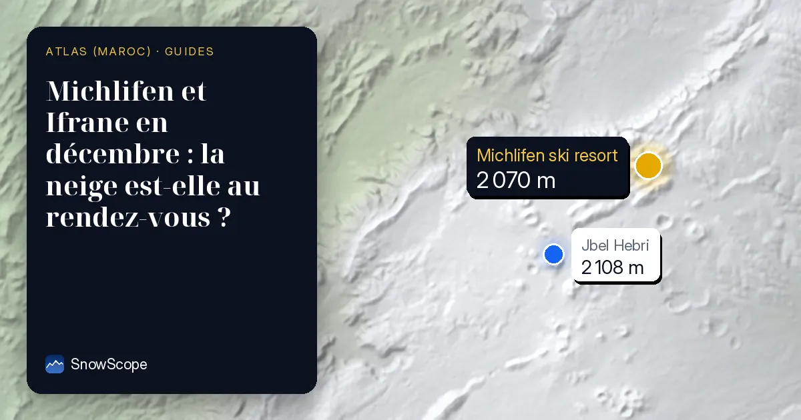

Michlifen et Ifrane en décembre : la neige est-elle au rendez-vous ?
En 46 hivers d'enregistrements, Michlifen à la mi-décembre n'a généralement pas de neige skiable. Seulement lors d'années rares la neige reste suffisamment longtemps au sol pour compter. C'est une station pour les chasseurs de tempêtes, pas pour prévoir une semaine à l'avance.
Consultez les prévisions neige en temps réel pour Michlifen ski resort sur l'application SnowScopeHauteurs de neige, alertes poudreuse et carte 3D, gratuitement.
Pourquoi Michlifen peine en décembre
Michlifen se situe dans le Moyen Atlas marocain à une altitude basse pour une station de ski : la base est à 1 870 m, mi-montagne à 1 970 m et le sommet à 2 070 m. À seulement 13 km, Ifrane est souvent sous un manteau de neige pittoresque, mais les pentes de Michlifen racontent une autre histoire. Les montagnes ici reçoivent souvent de la neige mais la perdent rapidement à cause de la fonte et du vent.
L'altitude compte moins dans l'Atlas que dans les chaînes européennes. Ce qui compte vraiment, c'est le timing : quand la neige tombe et à quelle vitesse le soleil la dévore. En décembre, le soleil est bas mais assez puissant pour enlever un mince manteau en quelques jours.

Le tableau de décembre à trois altitudes
À mi-montagne (1 970 m), le 15 décembre montre 0 cm dans un hiver typique. Même dans un décembre généreux—un hiver sur dix—on n'obtient que 5 cm. Au 31 décembre, un hiver typique reste à 0 cm, bien qu'un gros décembre atteigne 17 cm. La partie sombre : 83 % des hivers restent presque sans neige (moins de 5 cm) à la Saint-Sylvestre.
Le tableau est pire à la base et similaire au sommet. Les premières neiges durables arrivent généralement autour du 14 décembre, mais le mot « durables » est généreux : un décembre typique n'apporte que 24 jours avec neige au sol. Beaucoup de ces jours arrivent en courtes rafales entre des périodes de fonte.

Quand la bonne neige arrive
L'hiver dernier (2025-26) a cassé la tendance. Le jour de Noël 2025, mi-montagne tenait 50 cm—suffisant pour skier. La saison a culminé à 51 cm sur 48 jours de neige. Le Jbel Hebri proche a aussi reçu 48 cm le jour de Noël, bien qu'un hiver typique là-bas compte seulement 20 jours de neige.
Ces hivers sont l'exception. Quand ils arrivent, ils arrivent soudainement : un système de tempête s'immobilise sur l'Atlas, déverse de la neige abondante et la base s'épaissit vite. Puis le temps s'en va. La différence entre un décembre sans neige et un skiable dépend souvent d'une seule arrivée de tempête.
Michlifen contre les hauteurs
Oukaïmeden, situé bien plus haut dans la même chaîne, est plus sûr pour une visite en décembre. À mi-montagne (2 929 m), un 15 décembre typique offre 16 cm, et 43 % des hivers ont au moins 25 cm à ce moment. Mi-montagne de Michlifen à la même date est 0 cm, avec seulement 2 % des hivers atteignant 25 cm.
Même Oukaïmeden est un pari en décembre. Mais les cotes penchent assez pour que si vous devez skier tôt en saison, la station la plus haute soit le choix plus judicieux. Michlifen a du sens seulement si vous pouvez agir vite après une neige fraîche.
Ce que les 46 derniers hivers enseignent
Les données couvrent 1980-81 à 2025-26 et ne montrent aucun changement à long terme. Le pire décembre en enregistrements a apporté 9 cm de neige maximale à mi-montagne. Le meilleur en a apporté 80 cm. La médiane se situe à 31 cm, mais ce chiffre cache la vérité : la plupart des années sont maigres, quelques années sont épaisses, et décembre est divisé entre eux.
Début décembre (avant le 15 décembre) est plus maigre que fin décembre. Le 25 décembre, les bonnes années deviennent plus courantes. À la Saint-Sylvestre, les chances d'avoir 25 cm ou plus ont grimpé à 7 %. Si vous avez de la flexibilité, attendre fin décembre ou début janvier est mieux que de réserver tôt.
Comment utiliser cette station en hiver
La vraie force de Michlifen arrive après les premières grandes tempêtes de janvier ou février. C'est quand la base s'épaissit et tient. Si vous voulez visiter en décembre, traitez-le comme un bonus : regardez la météo, voyez un système de tempête se former et allez dans deux ou trois jours après de la neige abondante. Apportez des pneus hiver et vérifiez les conditions des routes avant de partir.
Pour l'expérience de carte postale d'Ifrane, un jour ou deux après une tempête livre généralement. La neige est fraîche, la ville est blanche et l'Atlas se montre à son plus beau. Mais compter sur cela en décembre est un vœu pieux. Prévoyez janvier ou après, ou chassez les tempêtes sur la prévision.
Conseils aux skieurs
- Regardez la prévision pour les tempêtes, pas le calendrier. Une visite en décembre fonctionne seulement si la neige tombe dans votre fenêtre de voyage. Partez dans les 48 heures après de la neige abondante pour attraper le meilleur manteau.
- Décembre à Michlifen, c'est du ski rare. Si la base montre du sol nu ou un manteau mince sur notre carte, ne réservez pas. Si vous voyez de la neige fraîche, agissez vite.
- Les routes du Moyen Atlas gèlent facilement après la neige, surtout à l'aube. Apportez des pneus hiver et vérifiez les conditions avant de monter à la montagne.
- Pour un voyage certain en décembre, envisagez plutôt Oukaïmeden. La neige de mi-décembre là-bas est plus probable, bien que toujours pas garantie.
- Début janvier et février sont plus fiables. Prévoyez votre principal voyage pour alors et traitez une chute de neige en décembre comme une chance heureuse, pas une promesse.
À propos de ces chiffres
Les hauteurs de neige des stations sont la neige la plus épaisse sur le haut du domaine à la date indiquée ; ce sont des estimations pour une zone, pas une mesure en un point. Les prévisions peuvent changer. Consultez toujours le bulletin d'avalanche officiel avant le hors-piste.
Citer ce bulletin
Pour la recherche, l'enseignement ou la presse : chiffres et graphiques réutilisables librement sous CC BY 4.0 avec cette citation.
SnowScope (2026), Michlifen et Ifrane en décembre : la neige est-elle au rendez-vous ?, https://snowscope.app/blog/fr/2026/11/michlifen-ifrane-neige-decembre-moyen-atlas.html, consulté le 2026-11-14
SnowScope (Atlas Labs). (2026, November 14). Michlifen et Ifrane en décembre : la neige est-elle au rendez-vous ?. SnowScope snow reports. https://snowscope.app/blog/fr/2026/11/michlifen-ifrane-neige-decembre-moyen-atlas.html
BibTeX
@misc{snowscope2026michlifenifraneneigedece,
author = {{SnowScope (Atlas Labs)}},
title = {Michlifen et Ifrane en décembre : la neige est-elle au rendez-vous ?},
year = {2026},
month = nov,
howpublished = {\url{https://snowscope.app/blog/fr/2026/11/michlifen-ifrane-neige-decembre-moyen-atlas.html}},
note = {Published 2026-11-14 13:29 UTC; accessed 2026-11-14}
}· CC BY 4.0 · Méthodes, données et outils →
Suivre Michlifen ski resort
Gratuit : un message quand la neige arrive, et la météo chaque matin.
Autres bulletins neige

Les stations de ski de l'Atlas ne gardent pas de neige sur leurs pentes aujourd'hui. La neige n'est stockée que sur les plus hauts sommets : environ …

8 cm : c'est le maximum de neige que SnowScope trouve dans l'Atlas aujourd'hui. Les stations de ski de l'Atlas n'ont pas de neige sur leurs pentes …

Les stations de ski de l'Atlas n'ont pas de neige sur leurs pentes aujourd'hui. SnowScope n'en trouve que sur les plus hauts sommets : …